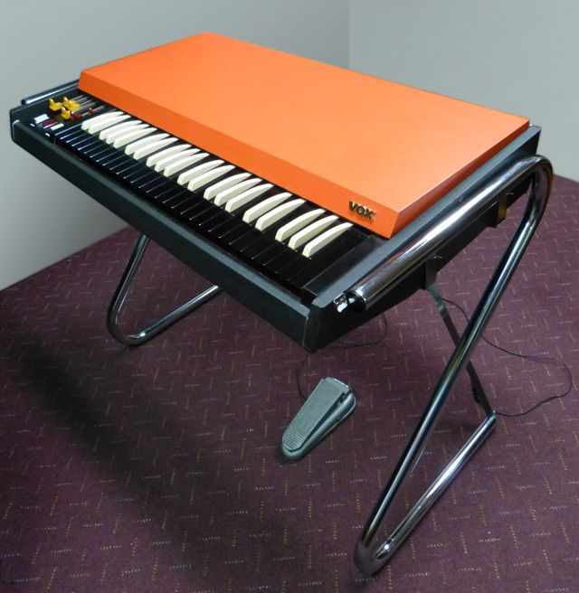

Scheda 037 · 1962 · Dartford, Kent
Vox Continental
Tasti bianchi e neri invertiti, come un clavicembalo: l'organo pensato per stare in una valigia
Sei drawbar e un case arancione: l'organo per il furgone della band, non per lo studio di registrazione.
Il suono vero · 0:18
Un Vox Continental vero.
0:00 / 0:18
Registrazione di Ritchie333 · CC BY-SA 4.0 · Wikimedia Commons · estratto di 18 s, volume normalizzato
- ANNO
- 1962
- COSTRUTTORE
- Jennings Musical Instruments
- TASTI
- 49, invertiti
- DRAWBAR
- 6
La macchinaChe cos'è
Vale la pena guardarlo prima di sentirlo: tasti bianchi e neri invertiti, come un clavicembalo, e sei drawbar a slitta al posto delle solite levette. Dentro non ci sono valvole né le ruote foniche dell'Hammond: gli oscillatori sono a transistor, e il Continental pesa una frazione di un organo a valvole, sta nel bagagliaio di un furgone. Non prova a imitare la chiesa: il timbro è nasale, tagliente, fatto apposta per bucare chitarra e basso su un palco senza microfono dedicato all'organo. Il case arancione, o rosso a seconda del mercato, si vede da fondo sala.
Chi l'ha costruitaLes Hills e il reparto tecnico JMI
Il case squadrato e i tasti invertiti sono un brevetto del dicembre 1955, firmato dal designer Les Hills per la Jennings Musical Instruments di Tom Jennings — lo stesso Jennings che nel 1957 fonda il marchio Vox per vendere amplificatori alle band inglesi. I circuiti a transistor, al posto delle valvole, li sviluppa il reparto tecnico dell'azienda, con Albert Hogben fra gli ingegneri. Il Continental arriva sul mercato nell'agosto 1962, a 225 ghinee: la prima menzione a stampa che si trova è sulla Music Trade Press di giugno di quell'anno.
Come funzionaCosa c'è dentro
Ogni drawbar aggiunge o toglie un'armonica, come su un Hammond: sei in tutto, quattro per l'altezza del suono e due per scegliere fra il timbro reed e quello flute. La differenza è dentro: niente ruote foniche, l'onda la fanno oscillatori a transistor, uno per nota nella prima ottava e poi divisi verso l'alto per le altre. È il motivo per cui il Continental si solleva con una mano sola e un Hammond no. Il rovescio della medaglia: i primi transistor al germanio sono instabili, e l'organo va accordato più spesso di quanto vorreste.
Chi l'ha usataNei dischi
- Alan Price (The Animals)L'intro di «The House of the Rising Sun» (1964), drawbar aperti a salire, manda una generazione di tastieristi nei negozi Vox
- Ray Manzarek (The Doors)Il suo Continental di inizio anni Sessanta è oggi nella collezione della Rock & Roll Hall of Fame
- Doug Ingle (Iron Butterfly)Scrive e suona «In-A-Gadda-Da-Vida» (1968) su questo organo, diciassette minuti su un lato intero del disco
Da ascoltare
The Animals, «The House of the Rising Sun» (1964)
L'intro di Alan Price sale per gradi, drawbar aperti: è il suono che nel '64 manda tutti i tastieristi nei negozi Vox.
L'aneddotoUna storia
Una sera di fine anni Sessanta Doug Ingle si siede al suo Continental dopo aver bevuto un gallone di vino Red Mountain, quasi quattro litri, e scrive una canzone che intitola «In the Garden of Eden». Quando la canta al batterista Ron Bushy perché se la segni, la voce gli esce così impastata che Bushy scrive quello che sente: «In-A-Gadda-Da-Vida». Il titolo sbagliato resta. Il pezzo, inciso nel 1968 sull'organo di quella sera, occupa da solo il secondo lato del disco.
Avvertenze
I miei oscillatori sono a transistor al germanio: si scaldano e calano d'intonazione. Ridatemi un quarto d'ora, prima di accusarmi di stonare.
Il carosello
Le 6 tavole


Da dove viene
Fonti
- «Vox Continental» — Wikipedia (EN) verificata il 2026-09-22
- «The Vox Continental portable transistor organ, 1962-1964» — voxac30.org.uk verificata il 2026-09-22
- «Doug Ingle» — Wikipedia (EN) verificata il 2026-09-22
- «Vox Continental Combo Organ» — Reverb verificata il 2026-09-22
Foto: Docrobbie · CC BY-SA 4.0 · Wikimedia Commons
Foto nelle tavole: Docrobbie · CC BY-SA 4.0 · Wikimedia Commons
Suono: Registrazione di Ritchie333 · CC BY-SA 4.0 · Wikimedia Commons · estratto di 18 s, volume normalizzato